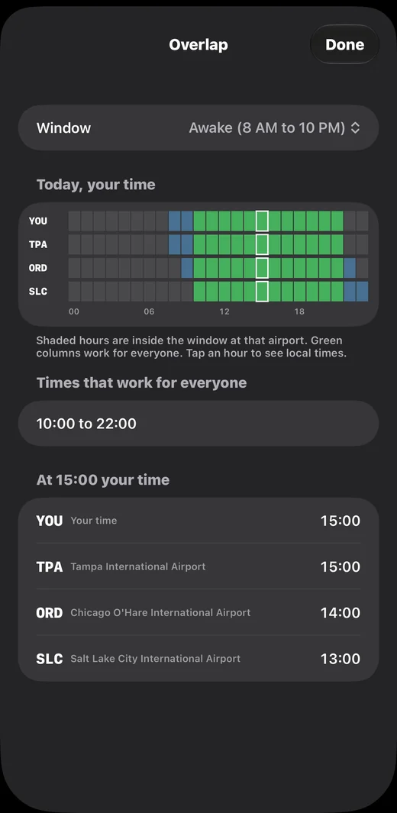
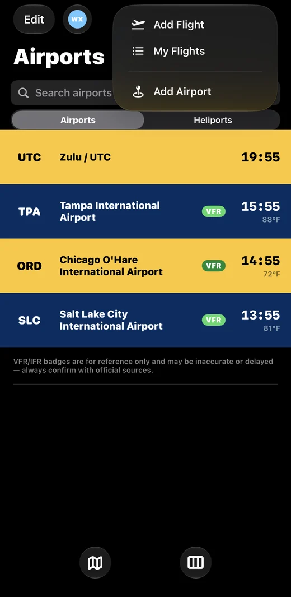
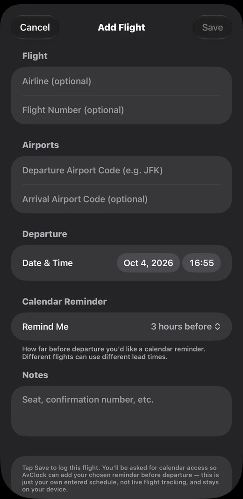

AvClock 1.9: Overlap, Jet Lag Plans, and Flights From the + Button
AvClock 1.9 is out for iPhone. This one is about planning around time zones instead of only reading them: a new Overlap screen that finds the hours that work in every city you care about, flights one tap away from the + button, a jet lag plan built from your own trip, and a departure countdown right on your Lock Screen. Here's everything in it.
Overlap: the hours that work everywhere
Trying to call someone in Chicago and someone in Salt Lake City without waking anybody up? Tap the new Overlap button at the bottom of the main screen. AvClock lays out a 24-hour strip for you and every saved airport, all on your own clock, and shades the hours that fall inside the window you pick: Awake (8 AM to 10 PM) or Business (9 AM to 5 PM). The green columns are the hours that work for everyone, and they're listed right under the grid.
Tap any hour and you get every airport's local time at that moment, so "3 PM for me" turns into "2 PM in Chicago, 1 PM in Salt Lake City" without any math. Overlap is free.

Add Flight and My Flights, right from +
The + button at the top of the main screen is now a short menu: Add Flight and My Flights first, then Add Airport. Logging a trip takes a few seconds: the airline and flight number are optional, the departure airport is the only code you need, and you pick the date and time.
Each flight also gets its own calendar reminder lead time, anywhere from 30 minutes to 12 hours before departure. A short domestic hop and a long international trip don't need the same warning, so now they don't get it. Everything you enter stays on your device; this is your own schedule, not live flight tracking.


A jet lag plan for your trip
Open a flight in My Flights and AvClock builds a day-by-day plan for when to get light, when to avoid it, and when to sleep, from the two time zones and your destination's real sunrise and sunset. There's an optional step for the days before you go, if you'd like to start shifting early. Want to see what day one looks like? Try it on the homepage with any two airports.
A departure countdown on your Lock Screen
Within eight hours of a logged flight, you can start a live countdown that sits on your Lock Screen and in the Dynamic Island, showing your departure time in both local time and Zulu. It's there every time you glance at your phone, no unlocking needed.
The Big Clock widget
A new widget made for StandBy and the Home Screen: one airport's time, as big as it gets. Tap the arrow on the widget itself to step to your next saved airport, without opening the app.
Find any airport from iPhone search
Every airport in AvClock now shows up in Spotlight. Swipe down on your Home Screen, type a code or a city, and tap the result to land right on that airport's detail screen.
Overlap, the Big Clock widget, and Spotlight search are free. Add Flight, My Flights, the jet lag plan, and the departure countdown are part of AvClock Premium, a one-time purchase. Without Premium, the flight rows in the + menu show a lock and open the upgrade screen.
AvClock is reference and informational only, not for actual flight planning or navigation. Flight times you log are your own entries, not live flight data; always confirm with your airline and official sources.